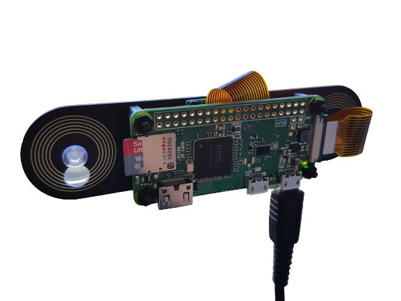

Welcome to this PiBlog! Here we cover the worlds of the Raspberry Pi family. We will cover from the worlds of the old RasPi B+ to the bleeding-edge Model 4+. ​
The Raspberry Pi, shown above, is the Model 4b. This has an array of uses, including running Docker, a Minecraft Server and even your own website! Below are some examples of cool things done with a raspi.

A RasPi Zero based surveillance camera.
A RasPi Model 4b running a dashboard for Asetto Corsa
 Account
Home
Pi Projects
Specs
Account
Home
Pi Projects
Specs